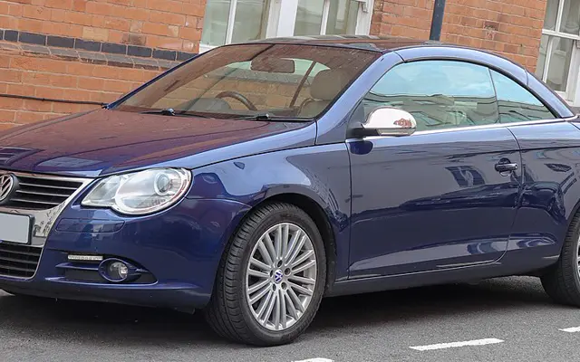

Par Motor › Precios por modelo › Volkswagen Eos
Precio de segunda mano · noviembre de 2026¿Cuánto vale un Volkswagen Eos de segunda mano?

Precio justo estimado de un Volkswagen Eos usado en España, año por año, con los kilómetros normales para su edad y en buen estado: de 9.600 € a 19.000 €. Para tasar el tuyo con sus kilómetros reales y su estado, usa el tasador gratis.
Precios del Volkswagen Eos por año
Eos (2006–2015)
Precio de nuevo: 1.4 TSI 122 CV, 30.000 € · 2.0 TDI 140 CV, 33.000 € · 2.0 TSI 200 CV, 36.000 €
| Año | Km normales | 1.4 TSI 122 CV · Gasolina | 2.0 TDI 140 CV · Diésel | 2.0 TSI 200 CV · Gasolina |
|---|---|---|---|---|
| 2015 | 100.000 km | 15.800 € | 17.800 € | 19.000 € |
| 2014 | 100.000 km | 15.500 € | 16.700 € | 18.600 € |
| 2013 | 100.000 km | 14.700 € | 15.700 € | 17.700 € |
| 2012 | 100.000 km | 13.900 € | 14.800 € | 16.600 € |
| 2011 | 100.000 km | 13.000 € | 13.900 € | 15.600 € |
| 2010 | 100.000 km | 12.300 € | 13.100 € | 14.700 € |
| 2009 | 100.000 km | 11.500 € | 12.300 € | 13.800 € |
| 2008 | 100.000 km | 10.800 € | 11.600 € | 13.000 € |
| 2007 | 100.000 km | 10.200 € | 10.900 € | 12.200 € |
| 2006 | 100.000 km | 9.600 € | 10.200 € | 11.500 € |
La cadena de distribución se estira antes de tiempo y puede saltar un diente, con una avería muy cara. Un traqueteo metálico unos segundos al arrancar en frío es la señal de alarma. Desde 2013-2014 se montó otro motor con correa que no tiene este problema. Pregunta si ya se cambiaron la cadena y el tensor.
Consumo de aceite exagerado (hasta un litro cada mil kilómetros) por unos segmentos de pistón defectuosos. La reparación consiste en cambiar pistones y segmentos. Comprueba si ya se hizo y cuánto aceite gasta.
Kilómetros normales: 15.000 al año en gasolina, híbridos y eléctricos, y 20.000 en diésel, con un máximo de 100.000 km (por encima no tasamos: el precio depende demasiado del historial de cada coche). Cifras redondeadas a 100 €.
Preguntas frecuentes
¿Cuánto vale un Volkswagen Eos de segunda mano?
Según el año, la versión y los kilómetros, un Volkswagen Eos usado vale hoy de 9.600 € a 19.000 € en España. El más barato de nuestra tabla es un 1.4 TSI de 2006 (9.600 €) y el más caro un 2.0 TSI de 2015 (19.000 €). Son precios justos estimados entre particulares y profesionales, con los kilómetros normales para su edad y en buen estado.
¿Cuánto valor pierde un Volkswagen Eos al año?
Con unos años encima, un Volkswagen Eos pierde alrededor de un 6 % de su valor cada año (calculado sobre el 1.4 TSI de la generación Eos). Los primeros años la caída es mayor y a partir de los 70.000 km se acelera.
¿Qué motorizaciones tiene el Volkswagen Eos?
En nuestra base de datos hay versiones gasolina y diésel, en 1 generación: Eos.
¿Qué motores del Volkswagen Eos dan problemas?
Ojo con el 1.2 y 1.4 TSI/TFSI de primera generación (cadena) (1.4 TSI, 2006–2013) y el 1.8 y 2.0 TFSI/TSI (consumo de aceite) (2.0 TSI, 2008–2012): son motores con fallos graves y muy extendidos. Antes de comprar uno, pide el historial de mantenimiento y comprueba si ya se hizo la reparación. El resto de motores no tiene problemas fuera de lo normal.
¿Cómo sé si me piden demasiado por un Volkswagen Eos?
Abre el tasador de Par Motor, elige el Volkswagen Eos, el año y los kilómetros reales, y escribe lo que te piden. Te diremos si está por debajo del precio justo (chollo) o por encima (caro). Es gratis y no pide registro ni matrícula.
Otros Volkswagen
- Amarok
- Beetle
- Caddy
- CC y Arteon
- Golf
- Golf Plus y Sportsvan
- ID. Buzz
- ID.3
- ID.4
- ID.5
- ID.7
- Jetta
- Multivan y California
- Passat
- Polo
- Scirocco
- Sharan
- T-Cross
- T-Roc
- Taigo
- Tiguan
- Touareg
- Touran
- up!
Compara su coste real
El precio de compra es solo una parte. Mira cuánto te costaría al mes con combustible, seguro, neumáticos, mantenimiento y lo que pierde de valor.
Abrir el comparador →